CS184/284A Spring 2025 Homework 3 Write-Up
Link to webpage: https://cal-cs184-student.github.io/hw-webpages-nico-1/hw3/index.html
Link to GitHub repository: https://github.com/cal-cs184-student/sp25-hw3-nico-hw3
Overview
This project implements a ray tracer with features like ray generation, BVH acceleration, direct and global illumination, and efficient rendering of complex 3D scenes.
Part 1: Ray Generation and Scene Intersection
The first to parts of the rendering pipeline are ray generation and scene intersection. For each pixel,- We generate a ray from the camera origin to the pixel location on the image plane. The ray direction is calculated by normalizing the vector from the camera origin to the pixel location.
- We then test for intersections with all objects in the scene for each ray (typically with triangles, spheres, boxes, etc.). After finding the closest intersection point, we calculate the surface normal at the intersection point. With this information, we can calculate the color of the pixel by shading the intersection point based on the material properties.
A few small .dae files with normal shading

|
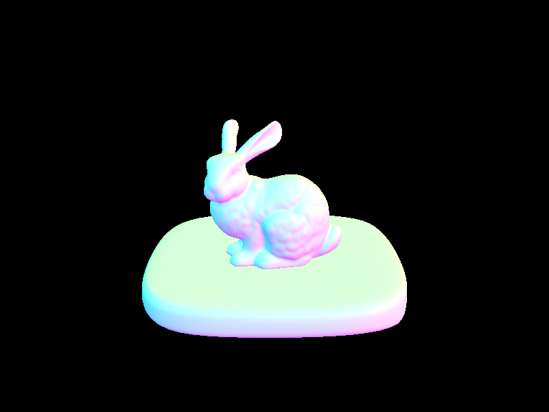
|
|
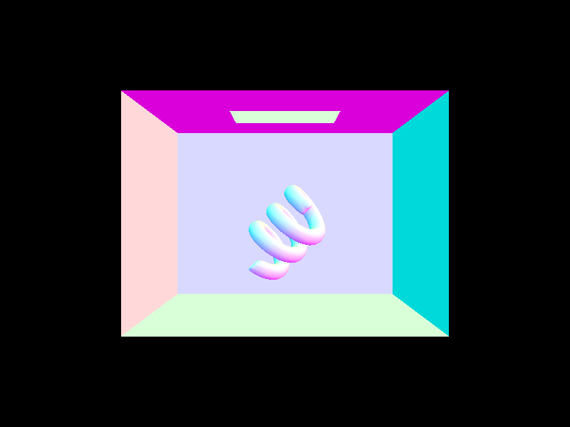
|
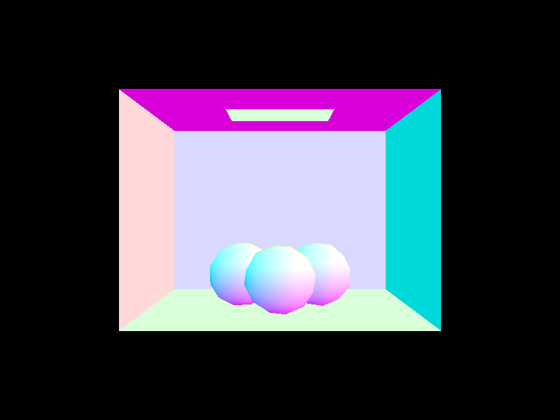
|
Part 2: Bounding Volume Hierarchy
My BVH construction algorithm starts by computing the bounding box of all primitives in the range \([start, end]\), then turning this into a node.
If the number of primatives in this box is no greater than max_leaf_size, we make it a leaf node. Otherwise, we create a new (temporary) bounding box of
all the centroids of the primitives in the box, and split the original box along the longest axis of this new bounding box. We then partition the primitives based
on this split, and recursively build the left and right children of the node. This process is repeated until we reach a leaf node. In the case where all
primatives end up in the left or right split, we manually split the box at the midpoint of the split axis.
A few large .dae files with normal shading
|
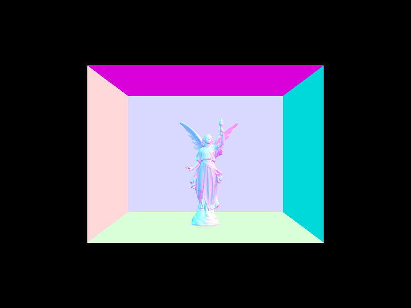
|
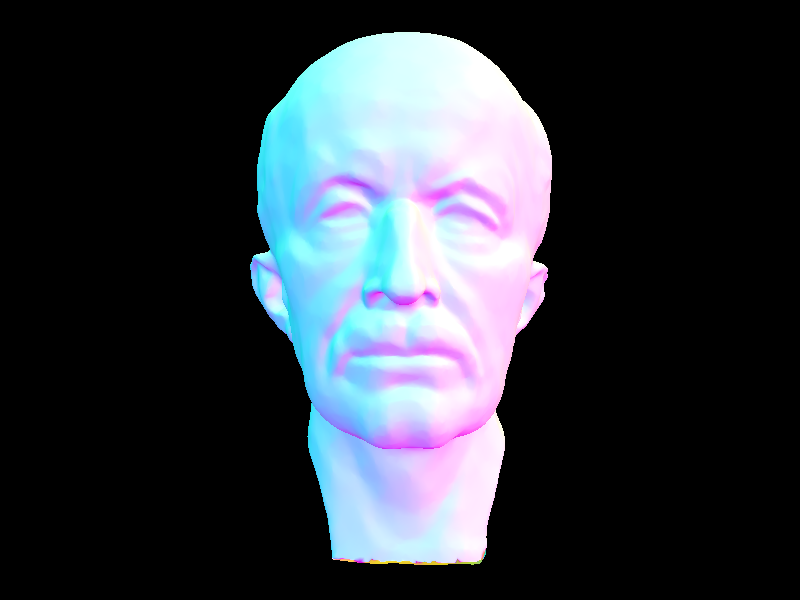
|
|
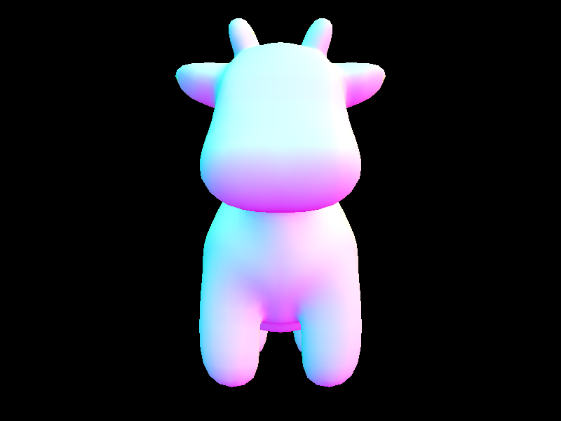
|
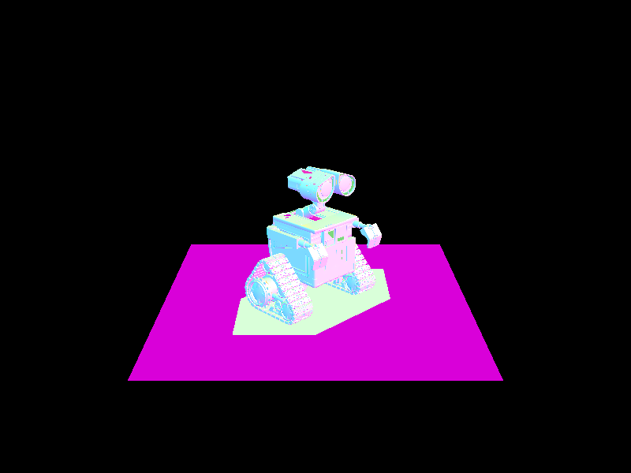
|
Before BVH acceleration, even a fairly simple scene like dae/sky/bunny.dae took a relatively long time to render: upwards of 30 seconds. However, with acceleration, extremely complex scenes like dae/sky/bunny.dae, dae/sky/wall-e.dae, and dae/meshedit/maxplanck.dae take a matter of one second or less to render (with normal shading). It is clear that implementing the BVH and BVH intersection algorithms greatly improves the efficiency of ray tracing, just like incorporating bounding boxes to triangle rasterization.
Part 3: Direct Illumination
Direct Lighting with Uniform Hemisphere Sampling determines the color value at a pixel by sending a ray from the camera origin through each pixel on the image plane. For each ray, we test for intersections with all objects in the scene. If the ray intersects an object, we calculate the surface normal at the intersection point. We then calculate the color of the pixel by shading the intersection point based on the material properties, sampling the hemisphere uniformly to calculate the direct illumination at the intersection point. We also calculate the direct illumination at the intersection.
Direct Lighting by Importance Sampling Lights is similar, but instead of sampling the hemisphere uniformly, we sample the lights in the scene based on their emission. We calculate the direct illumination at the intersection point by sending a ray from the intersection point to the light source, and then shading the intersection point based on the material properties; if the ray we cast is blocked by any objects in the scene, the light contributes nothing.CBBunny with both lighting implementations:
|
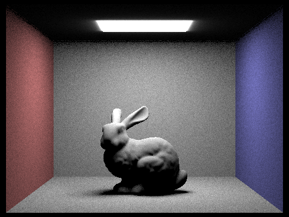
|
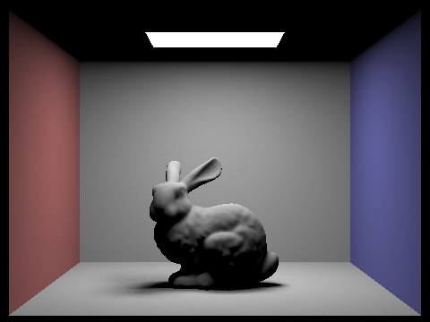
|
CBSpheres Using Importance Sampling:
|
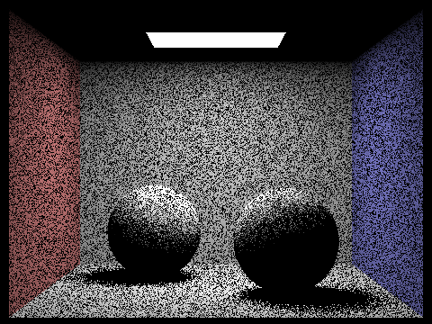
|
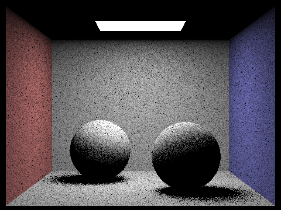
|
|
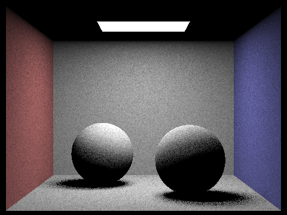
|
|
Generally, uniform hemisphere sampling and importance sampling produce similar images at high sampling or light ray rates. However, the quality (in terms of brightness and noisiness) of the image produced by importance sampling is generally higher than that of uniform hemisphere sampling, as importance sampling is more efficient at sampling the lights in the scene. This is especially true when the scene has many lights, as importance sampling can sample the lights based on their emission, whereas uniform hemisphere sampling samples the lights uniformly.
Part 4: Global Illumination
My indirect lighting function uses Monte Carlo integration and Russian roulette to calculate the indirect illumination at the intersection point. It functions similarly to one bounce illumination, but instead of making one function call, we recurse through the function until we reach the maximum ray depth or Russian roulette terminates the ray. We add the illumination received at each hit point to the final color of the pixel, weighting by the PDF of the ray direction and continuation probability.
Scenes With Direct and Indirect Global Illumination:
|
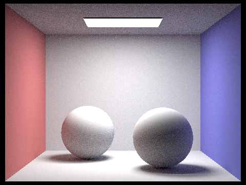
|